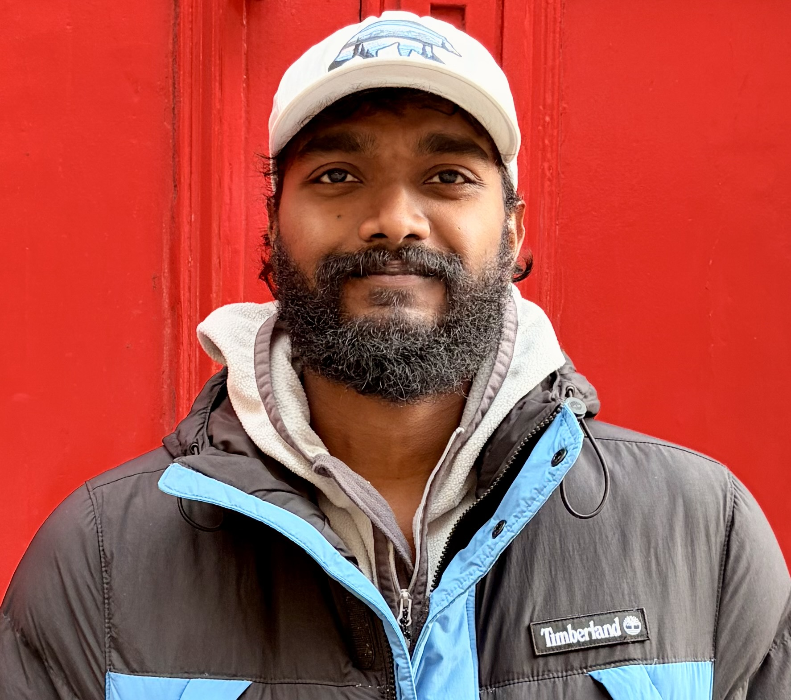

Remote Sensing • GIS • Earth Observation
Hydrographic Data Processor @ Fugro UK
Independent Researcher
Hydrographic Data Processor @ Fugro UK
Independent Researcher
$ initializing...
About Me
I am a Hydrographic Data Processor at Fugro UK, where I am involved in Marine Site Characterisation. On a personal basis, I am an Independent Researcher specializing in GIS, Remote Sensing, and Earth Observation. My research interests include Remote Sensing, Geospatial Analysis, and Earth Observation projects. Based in Aberdeen, Scotland, I am a Fellow of the Geological Society (FGS), Fellow of the Royal Geographical Society (FRGS), Accredited Spatial Scientist, and UAS/UAV Pilot.
Skills
- Remote Sensing
- GIS & Spatial Analysis
- Earth Observation
- Python / Geospatial Tools
- Machine Learning
- Hydrographic Mapping & Charting
Projects
🌊 Multi-Sensor Fusion for Benthic Habitat Classification
Developed a method to integrate Sentinel-2 imagery and ICESat-2 satellite laser bathymetry
for accurate benthic habitat mapping in coral reef areas.
🏞️ ICESat-2 ATL13 Validation
Validated ICESat-2 ATL13 water surface elevation data for high-latitude rivers in Scotland.
🧊 InSAR Inversion for Basal Melt Rates
Applied InSAR inversion techniques to estimate basal melt rates of ice sheets.
3D Globe
Add your Cesium ion token to enable the interactive globe.
Contact
Email: shobha.dumpati@outlook.com
Location: Aberdeen, United Kingdom